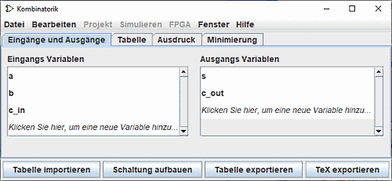
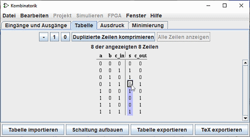

Bearbeiten der Wahrheitstabelle
Wenn Sie das Kombinatorikfenster öffnen, werden Sie sehen, daß es vier Registerkarten enthält.

Diese Seite wird die ersten tzwei Registerkarten beschreiben: Eingänge und Ausgänge und Tabelle. Die nächste Seite des Leitfadens beschreibt die letzten zwei Registerkarten: Ausdruck und Minimierung.
Die Registerkarten Eingänge und Ausgänge
Die Registerkarte Input & Output ermöglicht es Ihnen, die Listen der Ein- und/oder Ausgänge anzuzeigen und zu editieren und die Breite ihrer Daten zu präzisieren.
Um Elemente zur Liste hinzuzufügen, wählen Sie einfach die Zeile mit Auf-Pfeiltasten oder Ab-Pfeiltasten aus oder klicken Sie auf "Klicken sie..." und geben Sie den gewünschten Namen ein. Sie können über der Zeile "c_out" sehen, die in die Liste der Ausgangs eingefügt wurde. Dann können Sie die Datenbreite dieser Linie (rechts) mit der Maus definieren. Mit der Eingabe- oder Tabulatortaste wird die Eingabe beendet.
Wenn Sie eine der bestehenden Zeilen umbenennen wollen, können Sie mit einem doppelten Klick den Text ändern
Um eine Linie zu unterdrücken, wählen Sie sie wie zuvor aus, mit der Maus oder den Tasten Auf-Pfeiltasten oder Ab-Pfeiltasten, und verwenden Sie dann die Delete-Taste.
Um die Reihenfolge der Zeilen neu anzuordnen, wählen Sie sie wie oben beschrieben aus und verwenden Sie dann die Kombination Strg-Auf-Pfeil oder Strg-Ab-Pfeil, um sie in der Liste nach oben oder unten zu verschieben.
Alle Aktionen wirken sich unmittelbar auf die Wahrheitstabelle aus.
Die Registerkarte "Tabelle"
In der Registerkarte Tabelle finden Sie eine Reihe von Schaltflächen und die aktuelle Wahrheitstabelle. Diese wird auf gängige Art dargestellt, mit den Spalten, die die Eingänge repräsentieren, auf der linken Seite und den Ausgängen auf der rechten Seite.

Sie können die aktuellen Werte in den Ausgabespalten ändern, indem Sie auf den gewünschten Wert klicken und die Tastaturtasten 0,1 und - (die einen undefinierten Wert darstellen) oder die Schaltflächen - ,1 , 0 oben verwenden. Nach der Eingabe des Wertes bewegt sich der Cursor in der Spalte eine Zeile nach unten. Die Tastenkombinationen Auf/Ab-Pfeil oder Links/Rechts-Pfeil werden zum Verschieben der Auswahl verwendet.
Ebenso können Sie die Daten in den Eingabespalten ändern, indem Sie unbestimmte Werte (-) einfügen oder sie löschen und durch 0 oder 1 ersetzen. Wie wir auf der nächsten Seite sehen werden, erlaubt ein unbestimmter Wert die Ausarbeitung von Mindestausdrücken mit einer gewissen Flexibilität.
In diesem Rahmen vereinfacht die Schaltfläche Duplizierte Zeilen Komprimieren die Darstellung der Tabelle und Alle Zeilen anzeigen um sie in ihrer Gesamtheit zu präsentieren.
Wenn die Wahrheitstabelle auf einer vorhandenen Schaltung basiert, sehen Sie in den Ausgabespalten möglicherweise rote Quadrate mit einem "E" darin. Dies entspricht Fehlern bei der Berechnung der Werte für diese Zeile. Entweder schien die Schaltung zu oszillieren, oder der Ausgang selbst war ein Fehler (was durch ein rotes Kabel in der Logisim-Schaltung dargestellt werden sollte).
Weiter: Erstellen von Ausdrücken .